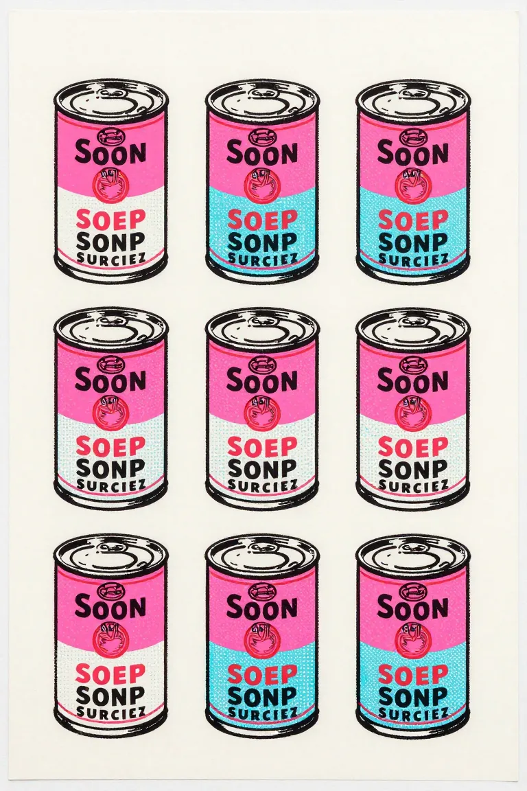

Фотографию или найденное изображение продавливают через шёлковый трафарет плоскими яркими красками, часто со сдвигом чёрного фотослоя. Уорхол превратил это в студийный процесс в 1962 году; Корита Кент печатала текст и цвет; этот вид стоит за поп-артом.

Главная идея
Механическое изображение, повторённое и раскрашенное вручную громкими красками, делает привычное новым.
Принципы дизайна
Начинайте с найденной фотографии, доведённой до высокого контраста или крупного растра, чёрной краской.
Кладите под чёрное 2–5 плоских кроющих ярких цветов, вырезанных вручную и чуть свободных относительно фото.
Пусть чёрный слой промахивается мимо цвета на 2–5 мм, чтобы была видна рука.
Повторяйте одно изображение сеткой с разными наборами цветов.
Берите цвета рекламы: ярко-розовый, лимонный, бирюзовый, оранжевый.
Держите плёнки краски толстыми, а края чуть неровными там, где прошла ракель.